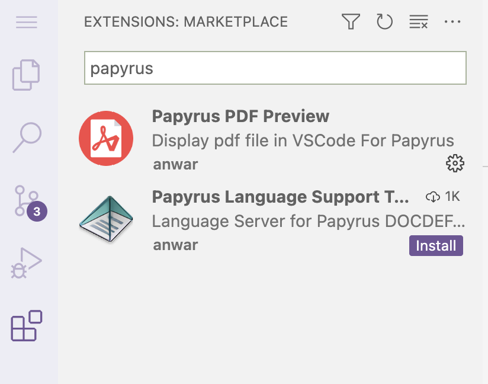

Solutions for Graded Assignment 3
![]()
Part A: Setting up
Initialize and use a Git repository throughout the assignment.
# Initialize a repo git init # For the first commit, may create a Gitignore file: echo "results/" > .gitignore echo "data/" >> .gitignore git add .gitignore git commit -m "Add a Gitignore file" # After Part B: git add scripts/* README.md git commit -m "Part B" # After Part C: git add scripts/printline.sh README.md git commit -m "Part C" # After Part D git add README.md git commit -m "Part D" # After part E: git add README.md git commit -m "Part E"
Part B: Running two scripts
Run
scripts/echo.shin 3 ways:# This passes 2 instead of the required 3 arguments to the script, making it fail - # note that "Finished" is not printed because the script has stopped by then: bash scripts/echo.sh Oct07 Oct08Oct07 Oct08 echo.sh: line 6: $3: unbound variable# The passes 4 arguments - the 4th argument shouldn't be there, # but the script doesn't care and will simply ignore its presence for your purposes: bash scripts/echo.sh Oct07 Oct08 Oct09 Oct10Oct07 Oct08 Oct09 Finished# This correctly passes 3 arguments because "Oct09 Oct10" is quoted and # therefore processed as a single argument: bash scripts/echo.sh Oct07 Oct08 "Oct09 Oct10"Oct07 Oct08 Oct09 Oct10 FinishedRun
scripts/concat.shto concatenate the two FASTQ files you copied todata/earlier.# It may seem like the below is passing 2 arguments only, # but 'data/ERR10802863*' will be expanded into 2 arguments! bash scripts/concat.sh data/ERR10802863* results/ERR10802863.fastq.gz # Alternatively, type out the input file names: # bash scripts/concat.sh data/ERR10802863_R1.fastq.gz data/ERR10802863_R2.fastq.gz results/ERR10802863.fastq.gz-rw-rw----+ 1 jelmer PAS0471 21M Oct 5 14:32 data/ERR10802863_R1.fastq.gz -rw-rw----+ 1 jelmer PAS0471 22M Oct 5 14:32 data/ERR10802863_R2.fastq.gz -rw-rw----+ 1 jelmer PAS0471 42M Oct 5 14:34 results/ERR10802863.fastq.gz
Part C: A shell script that prints a specific line
Write a shell script
scripts/printline.shthat accepts two arguments, a file path and a line number, in order to print (not store in a file) the requested line from the specified file.#!/bin/bash set -euo pipefail file="$1" line_nr="$2" # Use 'head' to print up until the desired line, then 'tail' to get the last line: head -n "$line_nr" "$file" | tail -n 1Test your script twice by making it print two different lines from
data/metadata.tsv.# First test - no redirection: bash scripts/printline.sh data/metadata.tsv 4ERR10802879 10dpi cathemerium# First test - redirection: bash scripts/printline.sh data/metadata.tsv 7 > results/meta_line7.tsv # No output will be printed, but you should have created a file: cat results/meta_line7.tsvERR10802884 10dpi controlRun a final test, but use variables:
file_name=metadata.tsv line_nr=2 bash scripts/printline.sh data/"$file_name" "$line_nr" > results/"$file_name"_"$line_nr" # Check the output file: ls -lh results/"$file_name"_"$line_nr"-rw-rw----+ 1 jelmer PAS0471 30 Oct 5 14:36 results/metadata.tsv_2cat results/"$file_name"_"$line_nr"ERR10802882 10dpi cathemerium
Part D: Containers
The program “Trim-Galore”, which you’ll use in the next few weeks of the course, trims and filters FASTQ files to remove adapters, poor quality bases, and short reads. Here, you’ll find and test-run containers with two different versions of this program.
Go to https://seqera.io/containers and find a container image for the program (default, i.e. latest, version). Back in VS Code, test-run the container with the command
trim_galore -v.apptainer exec oras://community.wave.seqera.io/library/trim-galore:0.6.10--bc38c9238980c80e \ trim_galore -vINFO: Downloading oras image 465.8MiB / 465.8MiB [=============================================================================================================================] 100 % 56.2 MiB/s 0s INFO: gocryptfs not found, will not be able to use gocryptfs Quality-/Adapter-/RRBS-/Speciality-Trimming [powered by Cutadapt] version 0.6.10 Last update: 02 02 2023Find a container for Trim-Galore version 0.5.0 and test-run it with the same command as above. Are the versions printed in both cases as expected?
apptainer exec oras://community.wave.seqera.io/library/trim-galore:0.5.0--16bd677ee493f6cd \ trim_galore -vINFO: Downloading oras image 409.7MiB / 409.7MiB [===================================================================================================================] 100 % 83.7 MiB/s 0s INFO: gocryptfs not found, will not be able to use gocryptfs Quality-/Adapter-/RRBS-/Hard-Trimming (powered by Cutadapt) version 0.5.0 Last update: 28 06 2018Yes, the versions reported by
trim_galore -vin both cases matched what we expected.
Part E: Modules and Pandoc
You’ll practice with OSC software modules and the program Pandoc, which can render Markdown files to HTML and PDF.
See if Pandoc is available at OSC prior to loading anything, and if so, which version, by running
pandoc -v. Then, search the internet to check if that Pandoc version is the most recent one.Yes, it is available without loading anything and as of October 2025 on Pitzer, the default version is
2.14.0.3:pandoc -vpandoc 2.14.0.3 Compiled with pandoc-types 1.22.1, texmath 0.12.3.3, skylighting 0.10.5.2, citeproc 0.4.0.1, ipynb 0.1.0.1 User data directory: /users/PAS0471/jelmer/.local/share/pandoc Copyright (C) 2006-2021 John MacFarlane. Web: https://pandoc.org This is free software; see the source for copying conditions. There is no warranty, not even for merchantability or fitness for a particular purpose.That is not nearly the most recent version, which is 3.8.1 as of October 2025.
Check what other versions of Pandoc are available in OSC Lmod modules, and load the module with the most recent available Pandoc version.
Check which versions are available:
module spider pandoc-------------------------------------------------------------------------------- pandoc: -------------------------------------------------------------------------------- Versions: pandoc/2.19.2 pandoc/3.6.4Version
3.6.4is the most recent one, so let’s load that:module load pandoc/3.6.4 pandoc -vpandoc 3.6.4 Features: +server +lua Scripting engine: Lua 5.4 User data directory: /users/PAS0471/jelmer/.local/share/pandoc Copyright (C) 2006-2024 John MacFarlane. Web: https://pandoc.org This is free software; see the source for copying conditions. There is no warranty, not even for merchantability or fitness for a particular purpose.
Use Pandoc to create a PDF of your
README.md, and check whether the PDF file is there.#If all went well, Pandoc did not print anything to screen, # but the PDF file should be there: lsdata README.md README.pdf results scriptsInstall the extension “Papyrus PDF Preview”, and take a look at your PDF. Then, download the PDF file to your computer and also take a look at it there.
- Click on the Extensions icon in the narrow side bar to open the Extensions panel in the wide side bar.
- Search for “papyrus” (or similar) and the extension should pop up:

- Click “Install”.
- After installation, you should be able to open the PDF file e.g. by simply clicking on it in the VS Code file explorer.
- Right-click on the PDF file in VS Code’s file explorer and select “Download…” to download a file to your computer.
Part F: Publish your repo on Github
Create a repository on GitHub, connect it to your local repo, and push your local repo to GitHub.
# After creating the repo on the GitHub website, connect it, e.g.: git remote add <URL> # Then push the local repo to the remote: git push -u origin main